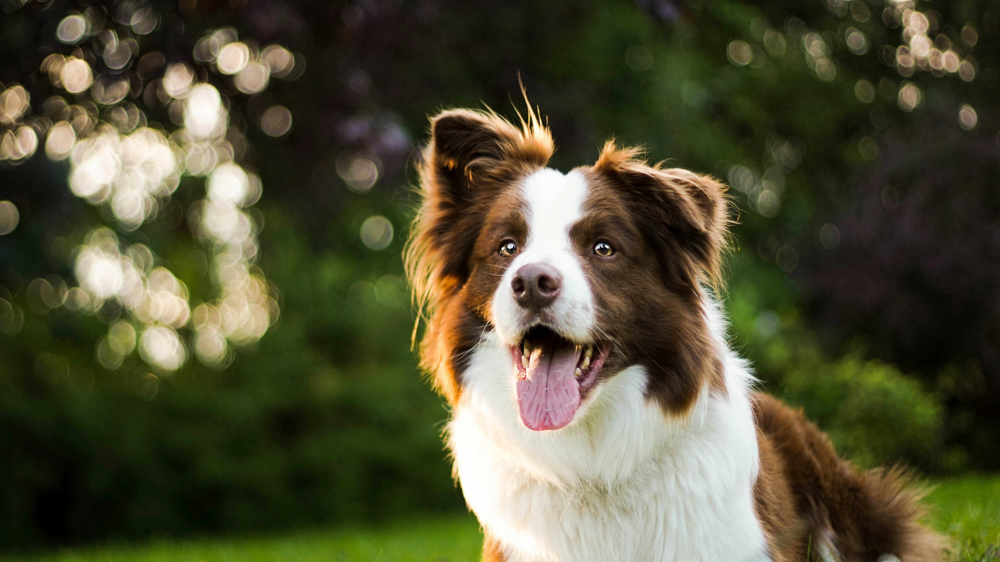

- Golden Retriever
- Border Collie
- Bernese Mountain Dog
- Norwegian Forest
- Siberian Forest
- American Curl
About Border Collies!

History of Border Collies
Border Collies originate from the borderlands between Scotland and England, where they were primarily bred as sheep herding dogs.
They are renowned for their intelligence, agility, and the intense stare, known as "the eye," which they use to control and herd sheep.
Characteristics
Border Collies are energetic, intelligent, and very responsive dogs.
They are highly regarded for their stamina and agility, often excelling in various dog sports.
They usually have a medium-length coat that can be either rough or smooth and commonly exhibit black and white markings, although other colors are also seen.
Exercise Needs
Due to their high energy levels, Border Collies require extensive physical and mental stimulation.
hey can develop behavioral issues if they do not receive enough exercise, making regular, engaging activities crucial for their well-being.
Cautions
Border Collies are not suitable for every home due to their need for intense activity and mental engagement.
They thrive best in environments where they have a job to do or can participate in regular, structured tasks.
Common Health Issues
Border Collies are generally healthy but can be prone to conditions such as hip dysplasia, collie eye anomaly, and epilepsy.
Regular check-ups with a vet can help manage and prevent these issues.